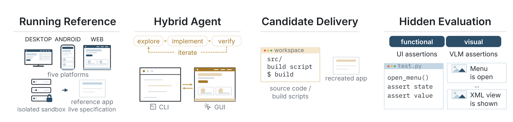
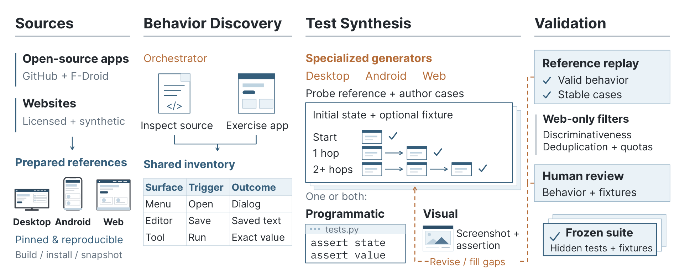
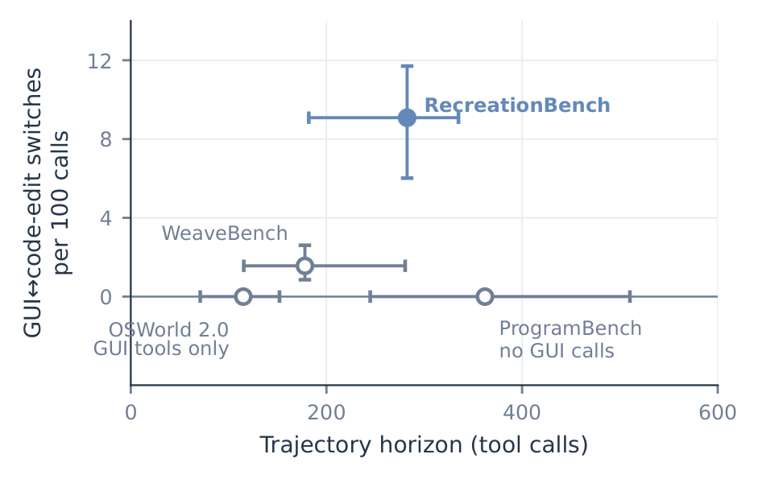

三、课题研究内容
□ 课题三：混合行为模式的可验证训练方法（已完成）
行为训练
视觉
文本

RecreationWorld（Core Contributor · Qwen 团队）：探索原版 → 实现 → 运行 → 视觉核验

环境构建：开源应用 → 行为探查 → 测试合成 → 参考回放校验 → 冻结隐藏测试集
■ 问题：自主编排与自我验证需在模态交织、结果可验证的场景中习得；图形界面缺少天然奖励，现有环境局限于单一界面
■ 解决方法：以应用复刻为训练场景：规格存在于界面中、交付物为代码、正确性需运行后视觉核验，天然要求两类模态交织；原版应用即 oracle，自动合成隐藏行为测试作为可验证奖励

每百次调用的 GUI↔代码切换：复刻任务远高于现有基准